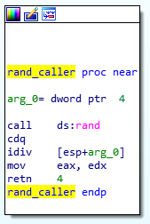
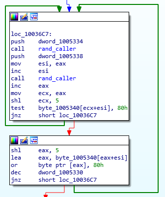
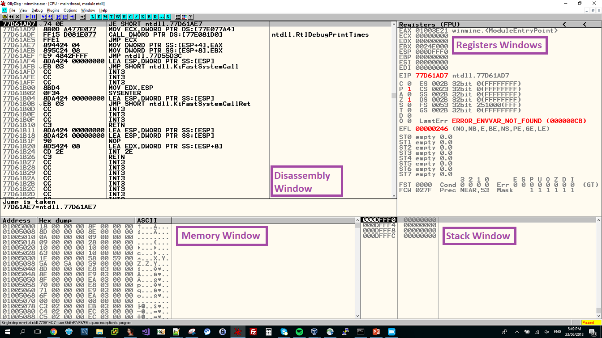
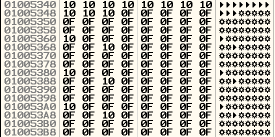

Session #5 - Hacking Minesweeper
The last part is a guided session to hacking Microsoft's famous Minesweeper game. You are welcome to check my blog-post where I told the story of solving this challenge. Also, you can download the patched version here.
I would like to give all the credit for this exercise to Aviad Carmel and thank him a lot for his help and support.
If you haven't heard of Minesweeper - now is the right time. Get acquainted with the rules and play it a couple of times :)
Our goal will be to make Minesweeper print flags where there are mines, right when starting up. Differently put, we would like to expose the mines on startup by printing flags on the mined squares.
Finding the Minefield
Now let's get into the min(e)ds of the Minesweeper developers.
Say we had to create a minefield - namely, some matrix, or an array of arrays - how would we determine which squares contain mines and which don't?
Since this decision should yield different results with every run of the game, we can assume that some randomization function is used to generate the minefield. Let's go for rand function :)
-
Download Minesweeper from this link.
-
Drag-and-drop it into IDA Pro.
-
Click on the Imports tab to see the function that winmine.exe imports.
-
Double-click on rand to reach the idata section, where all the addresses of imported functions can be found.
-
Click on rand to highlight it and then hit 'x'. The cross-references to rand will then appear.
-
Click on 'Ok' to move to the code which calls rand.
-
Nice! We just found the only place where rand is called.
Rename the function by clicking on sub_1003940, hitting 'n' and typing in a name like rand_caller.
Approaches
We can think of (at least) 2 different approaches to solving the problem:
-
Change the minefield.
Suppose we have a minefield somewhere in the memory of the Minesweeper process. This minefield must contain the information regarding mine locations, right?
If we manage to somehow change this information, so that a square with a mine will be marked with a flag - we're done.Pseudo-illustration:
minefield_before = [[empty, mine, ..., empty], [...], ..., [...]] minefield_hacked = [[empty, flag, ..., empty], [...], ..., [...]] -
Change the printing function.
As Minesweeper is a GUI application, it contains graphics and uses a function which prints those graphics to the screen.
If we manage to find this function and pass it the argument corresponding to flag whenever there is a mine - we're done.Pseudo-illustration:
if minefield[i] == mine: print_square(flag) else: print_square(empty)
We will take the first road. You may want, at a later point, to try the
second.
Static analysis of rand_caller
Now let's figure out what rand_caller is.
This function receives one argument which IDA calls arg_0.
The function calls rand which returns a random integer in
the EAX register.
Then cdq is called. This instruction converts a double-word
into a quad-word. Namely, it expands the value in EAX
such that this value is stored in EDX:EAX.
When idiv is called, it takes the value in EDX:EAX and divides it by the function's argument (note that [esp+arg_0] is a synonym to "what is stored in the address ESP + the stack offset of arg_0").
After this division, the quotient resides in EAX whereas the remainder (modulo) is in EDX. The fact that EDX is moved to EAX right before the function returns implies that the relevant value is the division remainder.
To sum up, rand_caller randomizes a number and then performs a modulo, guaranteeing the result does not exceed the value in arg_0.

Finding the calls to rand_caller
So now we know what rand_caller does. Let's find out where it is used. I remind you - our current goal is to find the place in code where the minefield is created or initialized.
-
Click on the name rand_caller to highlight it and then hit 'x' to show all cross-references.
-
In the xrefs window, it can be seen the rand_caller is called from two places in the code which are 8 bytes away from each other. Go there by double-clicking on one of the xref entries.
Now doesn't this look like an interesting code construct? ;)
Static analysis of the loop
We start with the first block.
Some value is pushed onto the stack and then rand_caller is called. The value is moved to ESI and incremented by 1.
Next, another value is pushed onto the stack and rand_caller is once again called. This time, the return value is incremented by 1, moved to ECX and multiplied by 32 (recall that shl ecx, 5 ~ ecx = ecx * 2^5).
We finish with:
-
0 < ESI < dword_1005334 + 1
-
31 < ECX < (dword_1005338 ) * 32 + 1
Make sure you understand why :)

Then, the sum of these two values is used as an offset of some memory location byte_1005340. Whatever byte is in the resulting address is tested against 0x80.
Note that the lowest address we can get here (after summing up base + offset) is 0x1005340 + 31.
What's the meaning of testing a value against 0x80?
0x80 in hex is 0b10000000 in binary. As you can tell, the only set bit is the 8th least-significant bit (if you count bits from right to left, the eighth is the only one set).
-
Take every number with this bit set. ANDing it with 0x80 will result in the number 0x80.
-
Take every number with this bit unset. ANDing it with 0x80 will result in 0x0 (zero).
In other words, testing against 0x80 checks whether the eighth LSB is set or not.
If the resulted value is not zero (meaning, the relevant bit was set), we go back and run this same block - the one which calls rand_caller twice. Otherwise, we proceed to the next block.
In this next block, we do the following:
-
We once again multiply EAX by 32 (this is redundant as it was already done with ECX. Compiler issues I guess...).
-
We load into EAX the value stored in the same offset from the same memory location we referenced before.
-
Then, we OR EAX with the value 0x80, which is a synonym to setting the 8th LSB in EAX.
-
We decrease some loop variable (dword_1005330) by 1 and continue.
All in all, it looks like the following:
We randomize two values and then reference a single byte in memory using the sum of these values as an offset (you can think of it as fetching an element from an array using an index). If some specific bit is set in the fetched byte - we go and randomize an offset all over again. If the bit is not set - we set it and continue with the loop.
This logic smells like random positioning of mines: say the 8th LSB marks a mine.
If we randomize a location where this bit is already set (namely, a mine is already present) - we try finding another proper location. Otherwise - if there is no mine on the square - we place one.
Before we continue, make sure you enable line prefixes in IDA to view addresses:
Click on Options > General > Line Prefixes (graph).
Dynamic analysis to our rescue
There are some values which we cannot see in IDA because they are only assigned at run time. However, dynamic analysis (AKA 'debugging') will come out very handy in these cases.
The values we are interested in are the following:
-
dword_1005334, dword_1005338 - the arguments passed to rand_caller and determine the range of randomized values.
-
dword_1005340 - the base address to which the offsets (indexes) are added.
Knowing what these values are at run time will give us a clue on what is going on.
-
Open winmine.exe in Olly and confirm any messages regarding permissions.
-
The program will open in an address space belonging to ntdll - look at the third line of disassembly. This is not the code we're looking for.
Hit F9 ('run') to reach the winmine.exe code.

Let's find out which values are passed as parameters to rand_caller:
-
Scroll (up) the disassembly window until you reach address 0x10036C7 where the first push instruction is (take a look at IDA to recall the code in this address).
-
Hit F2 to put a breakpoint (bp).
-
Hit F9 to run winmine.exe until the breakpoint we just placed is hit.
-
Now hit F8 to step over the current push instruction. Take a look at the uppermost value in the stack window. What is this value? I see a 9.
-
The call which follows the push is the call to rand_caller. As we stated before, the function is supposed to put in EAX a random number which is no greater than the argument (in my case - 9). Press F8 and verify this expectation.
-
Keep hitting F8 until you reach the second push. What value is pushed onto the stack this time? I still get a 9 :)
Does 9 remind us of something?
Now, let's see how a mine is placed (if our assumption is correct and this code indeed places mines to the board):
-
Reach (with F8s) the instruction at address 0x10036E6. This is where we check if the 8th LSB is set or not.
-
Right below the disassembly window, you can find the address that is to be checked in memory. Also, you can see the value stored in this address - 0F.
-
The test instruction should result in a zero, since 0x0F & 0x80 = 0.
According to our theory - we met an empty square with no mine in it. -
Hit F8 until reaching the or instruction. Look once again at the calculated address below the assembly code.
-
Navigate to this address in the memory window.
-
Hit F8 and watch this memory location change to 8F.
We just saw our loop in action: we randomized a memory location (in some limited range) and read the byte stored in this location. We checked if a certain bit in this byte was set. Since it wasn't - we set it so that the value changed from 0F to 8F.
Understanding the data in memory
It is a good time to strengthen our theory that the base address - 0x1005340 - is indeed the address of our minefield. I call it the base address because this is the address to which we add the random offset. As said before, it can also be thought of as the address of an array whose elements we read using a random index.
Find 0x1005340 in the memory window. This is what I see:

This looks like many arbitrary bytes, doesn't it? Let's try to dive into them.
I see:
-
a sequence of 11 times 10 followed by 21 times 0F (32 bytes in total).
-
9 repeating chunks, each is 32 bytes and consists of:
-
a single 10
-
a sequence of 9 times 0F
- another single 10
- a sequence of 21 times 0F
-
Given that by default, Minesweeper uses a 9x9 board - these 9 repeating chunks perhaps serve as the board rows: The 10s are row delimiters (they mark the beginning and end of a row) and the 9 0Fs are actually 9 squares.
The assumption that these are rows is also supported by the fact that the minimal index we can get (ESI+ECX) is 33 (scroll up to recall the range of possible values). Add up the base address 0x1005340 and 33 (0x21) and you get the address 0x1005361 which is, according to our theory in the previous paragraph, the first square of the board.
So now we are a bit (haha) more certain that this is the minefield. Also, we know that:
-
0F is an empty square
-
8F is a mine
But hey... we want to draw a flag, right? What's a flag's value?
Finding a flag's value with memory breakpoints
We know where the minefield is located in memory. We know how to map a square in the GUI to a memory address. We also know that right-clicking on a square will put a flag on it.
We will now use this information to understand what's the value which represents a flag.
-
Remove any previous breakpoints by highlighting the red line-of-code and hitting F2.
-
Run the process by clicking on F9.
-
Choose a square on the board, for example the upper-left corner.
-
Calculate its location in memory (in our case, the square corresponds to 0x1005361 as we calculated before).
-
Right-click on this address in the memory window and choose breakpoint > memory, on write. Now whenever a value is written to this location - the program will stop right before executing this write.
-
Right-click on your chosen square to put a flag on it. The program should stop at the following instruction: MOV BYTE PTR DS:[EAX], DL
-
Step over (F8) this instruction and take another look at your address. What is its value now with the flag?
Bits arithmetic
The value which corresponds to a square with a flag is 0x0E. However, recall that a square with a mine is marked as such by its 8th LSB. Taking 0x0E and setting this bit will result in the value 0x8F - which is what we aim for.
Remember how we placed a mine by ORing a 0x0F byte with 0x80? This resulted in the value 0x8F.
Now we need to make sure that this 0x0F turns into a 0x8E instead!
How do we do that? We need some bitwise operations...
Before: 0x0F to 0x8F, or 0b00001111 to 0b10001111.
After: 0x0F to 0x8E, or 0b00001111 to 0b10001110.
So basically we need to do two things:
-
Set the 8th LSB
-
Unset the 1st LSB
I tend to go with XOR here, look:
0x0F XOR 0x81 == 0b00001111 XOR 0b10000001 == 0b10001110 == 0x8E :)))))
Now patch!
The only thing that's left is to actually modify the program, or more specifically, the machine code it runs.
We have already come to the conclusion that we need to change a certain OR instruction to be a XOR instruction (with a slightly different operand). Let's do just that:
-
Find in OllyDbg the address 0x10036FA where the OR instruction is executed and click on it. Remember? This OR is responsible for placing a mine.
-
Hit the space-bar while the line is highlighted. A popup titled "Assemble at 010036FA" will appear.
-
Type in XOR instead of OR, and 81 instead of 80.
-
Click on "Assemble" and then hit Esc or choose "Cancel".
-
Right-click on the disassembly window and choose "Copy to executable" > "All modifications".
-
Click on "Copy all".
-
Right-click again, choose "Save file" and specify both location and name to the newly patched file.
-
Open the file from its location.
BRAVO you little hacker!
You have completed the Reverse Engineering for Beginners workshop!
You should be truly very proud! :)